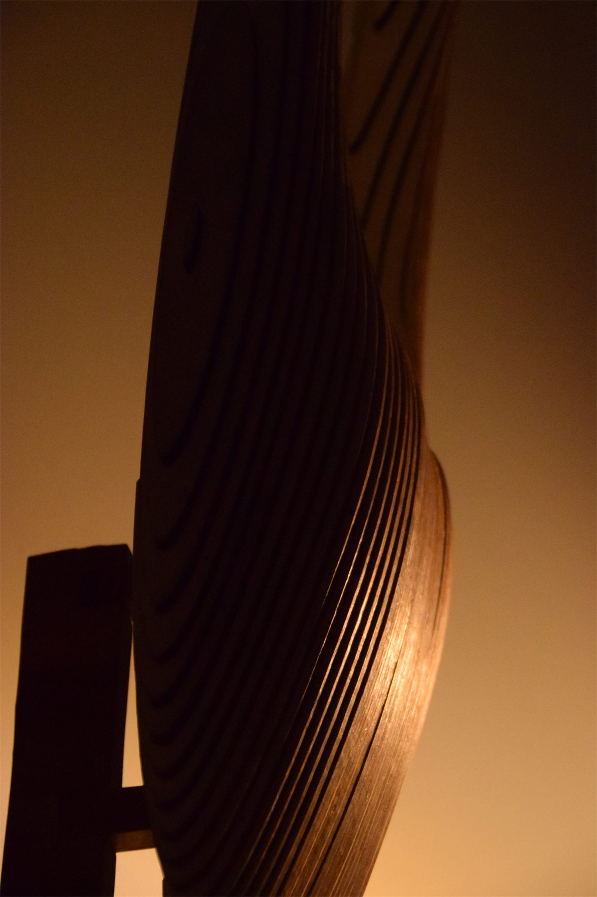

Objects / Light + living / EOD-001
Entomon Light
- Number
- EOD-001
- Kind
- Product
- Stage
- Built one-off
- Materials
- Laser-cut plywood, warm light source
- Size
- To be confirmed
- Year
- 2024

The work
A one-off wall light that draws on the shapes of insects and deep-sea life. Its laser-cut plywood form and warm light were developed together, so it reads as sculpture when off and atmosphere when lit.
Charter check
Every catalogue entry answers the charter’s tests in public.
What becomes possible
To be written
Who can share in it
To be written
How it lasts
To be written
What it taught
How to adapt an ambitious concept to material, budget and fabrication limits while keeping its character.
Process
Research · tests · assembly · final

